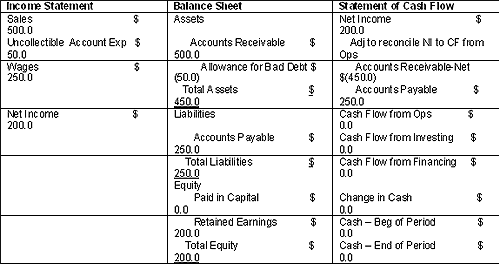
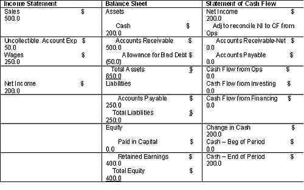
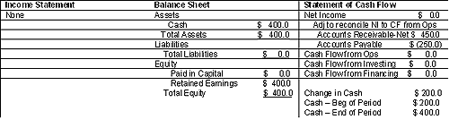

Earnings Quality: Introduction
The following classic Wall Street joke plays to a risk that many investors don't know how to measure:
A company is going through the interview process in order to hire a chief financial officer. In the last interview session, each of three finalists is given the company's financial data and asked, "What are the net earnings?" Two applicants diligently compute the net earnings. Neither of them gets the job. The candidate who lands the position answers the question by replying, "What do you want them to be?"
Determining how much "What do you want them to be?" (manipulation) there is in a company's reported earnings number is the point of this tutorial. We'll show you how to use accounting analysis to better estimate the degree of quality in reported earnings. Specifically, we'll detail some methods for analyzing the integrity of accrual accounts, which are key tools used in the manipulation of reported earnings. Hopefully, the end result will be to reduce your uncertainty as to whether a firm's accounting captures its true economic condition, which is the goal of financial accounting.
Keep in mind that when determining earnings quality, accounting analysis still relies on subjective input. You will need to incorporate opinions regarding the magnitude of accounting accruals: the macro and micro business environment, governance, insider trading, auditors' opinions, and fees and management incentives to manipulate financial statement results. Further, accounting analysis should not be thought of as a standalone methodology for determining the investment merits of a security. This accounting scrutiny fits into a larger framework of analysis, which includes strategic analysis, financial ratio analysis and valuation analysis; all are tools available to the fundamentalist.
For background reading, see Common Clues Of Financial Statement Manipulation.
Earnings Quality: Understanding Accounting Standards
The anecdote in the introduction does not portray the accounting situation with complete accuracy; there are rules that management must use when reporting operating performance. But even with rules, it is still difficult to determine how much, if any, manipulation has taken place. In fact, there is enough accounting noise in the data that shaping an idea about a firm's earnings quality is certainly not a science. Further still, analyzing earnings quality won't necessarily get you a definite answer as to whether the company's books are being managed. Because of the subjectivity involved in this analysis, it is imperative that you understand the nexus of this accounting challenge. (For related reading, see Show And Tell: The Importance Of Transparency.)
Accounting could be one of the driest subjects in this world. Accountant types may not be dull people, but for most people the subject of accounting certainly is boring. Unfortunately, this dryness makes accounting analysis a skill set that is neglected by many in practice. Fortunately, this neglect may be part of the reason that there are superior stock market returns to be earned by analyzing how a company applies accounting rules to its business. These superior returns are obtained through strategies that sell short stocks in companies where earnings quality is believed to be low and buy stocks in companies where earnings quality is believed to be high. The idea behind these strategies is that when earnings quality is believed to be low, earnings are less stable and more likely to be overstated than when earnings quality is perceived to be high. (For more on this strategy, see What Is Warren Buffett's Investing Style?)
Eventually, the past earnings overstatement will level out, which results in lower earnings (and thus security prices) down the road. This information can be summarized as follows:
|
Earnings Quality |
Stability of Earnings |
Likelihood of Earnings Overstatement |
Direction of Eventual Earnings Readjustment |
Future Earnings |
| Low | Low | High | Down | Low |
| High | High | Low | Up | High |
| Figure 1 |
Understanding a firm's accounting doesn't mean you have to pass the CPA exam and then manage the company's audit, but you should understand the objectives and theoretical concepts behind the setting of accounting standards. Once you have this understanding, you will then begin to see that the issue of earnings quality arises because of the cost/benefit tradeoff between cash accounting and accrual accounting. In turn, you will better understand what accounting analysis attempts to root out from the financial statements and other company disclosures. Again, this analysis is not a science; there is not an equation where you can just input X and always get Y. If you want to understand how 1+1=3, then you had better start at the beginning: the accounting concepts.
Earnings Quality: Defining "Good Quality"
In order to understand a company's financial report, you need to understand the accounting concepts that are used to justify the accounting rules. Basically, these accounting concepts provide rulemakers with guidance that will result in financial reports that best help investors, creditors and other financial-report users assess:
- Cash-flow amounts
- Timing of cash flow
- Certainty of cash flow
- Claims on the resources the company uses to produce cash flow (For more insight, see How Some Companies Abuse Cash Flow.)
Now let's begin looking into how accounting rules relate to earnings quality. First, we need to define what we mean when we say "quality", as earnings quality means different things to different users of financial statements. For example, regulators would view earnings quality as being high if the accounting had adhered to generally accepted accounting principles (GAAP), as GAAP is used by regulators to help ensure high quality in financial statements. For our purposes, we want reported earnings to do two things: to accurately represent current operating performance and to aid in accurately forecasting future operating performance. These requirements for high-quality earnings mean that the reported earnings amounts for a particular period should:
- Represent the underlying economics of the business
- Be both persistent and predictable (the metric should be stable over time)
Methods for Measuring Earnings Quality
In order to develop a way to measure earnings that meets our criteria for high quality, we need a metric that honors the fundamental qualities of GAAP. These features are reliability and relevance.
Reliability - The metric is verifiable, free from error or bias and accurately represents the transaction.
Relevance - The metric is timely and has predictive power; it can confirm or reject prior predictions and has value when making new predictions.
There are two basic ways to present a company's operating performance and measure earnings during a given period - cash accounting and accrual accounting. If you haven't already guessed, each has tradeoffs in terms of relevance and reliability. Furthermore, there is debate as to whether the increased relevance produced by accrual accounting is sufficient to overcome its relative lack of reliability.
Cash Accounting
The first method for measuring operating performance is based on cash accounting. Cash accounting involves recording transactions whenever cash enters or leaves the firm. The advantage of this accounting method is that the transactions recorded have been completed and the amounts involved are certain, making it highly reliable. The downside to cash accounting is that the earnings measurement is not very stable, which gives it low relevance. Think about how cash accounting for new equipment, expected to be used over several years, would make reported cash earnings volatile across multiple periods. The immediate cash outlay would reduce cash earnings early on and the lack of any cash outlay in the latter periods would increase cash earnings even though the firm used the equipment equally across all the periods. The following table illustrates this point:
| - | Sales | Labor Cost | Equipment Cost | Earnings |
| Period 1 | $100 | $20 | $30 | $50 |
| Period 2 | $100 | $20 | $0 | $80 |
| Period 3 | $100 | $20 | $0 | $80 |
| Total | $300 | $60 | $30 | $210 |
|
Figure 2: Cash accounting equipment example |
Accrual Accounting
In order to create an accounting method that has higher relevance than cash accounting, accrual accounting introduces the idea of periodicity. Periodicity states that each transaction should be assigned to a given period and split accordingly if it covers several periods. This is an attempt to recognize revenues in the period in which they were actually earned (GAAP's revenue-recognition principle) as well as to match the related expenses to the earned revenue (GAAP's matching principle).
The upside to the accrual method is that it results in a metric that is more relevant than cash flow. You can see this by comparing Figure 2 to Figure 3. In Figure 3, the accrual earnings amount of $70 in Period 1 is persistent over time and thus has more predictive power about future periods' earnings. Stock prices calculated by valuation models using accrual earnings also appear to be more closely correlated to the market price than when modeled with cash flow.
| - | Sales | Labor Cost | Equipment Cost | Earnings |
| Period 1 | $100 | $20 | $10 | $70 |
| Period 2 | $100 | $20 | $10 | $70 |
| Period 3 | $100 | $20 | $10 | $70 |
| Total | $300 | $60 | $30 | $210 |
|
Figure 3: Accrual accounting equipment example |
Note: Management made judgment calls on the residual value of the $30 equipment (here $0) and the useful life of the equipment (here 3 periods) so the equipment cost per period is ($30 - 0)/3 = $10 per period.
The disadvantage of accrual earnings is the obvious result that reliability is lower than for cash earnings. The use of accruals exposes the recording of the transaction to uncertainty related to the principles of revenue recognition and matching. This is because management's expectations and judgment are called upon to record transactions. The process of recognizing and matching creates holding accounts called accruals (accounts receivable) and allowances (allowance for bad debts) on the balance sheet. The amounts booked into these accounts are based on management estimates governed by accounting rules, which at times provide considerable latitude. (To learn more, see Reading The Balance Sheet.)
The following chart shows how cash and accrual accounting compare with respect to relevance and reliability:
| - | Relevance | Reliability |
|
Cash Accounting | Low, due to instability of earnings measurement | High, because deals with completed transactions |
|
Accrual Accounting |
High, due to periodicity | Low, because it relies on management\'s expectations |
|
Figure 4 |
Accruals In Action
Let's puts some life into this concept of accruals with an example. Suppose that you hire someone to draw water from the public well and carry it to 10 of your neighbors for $50 a day. Your neighbors pay you $10 a day each for the service - a $100 total per day. Everyone agrees that payday will be on Friday night, so no cash will change hands until then. You expect that one of your neighbors, Joe, will fail to pay you for your services. On Monday night, your water-service business will have an income statement and balance sheet that look something like Table 3 below. The bold and italicized items on the balance sheet are the holding accounts created to represent the amounts of cash that you, the manager, expect will change hands in the future.
 </p>
<p>The fact that management's judgment can lead to inaccurate accrual amounts, and therefore inaccurately reported earnings, can be seen in a continuation of the previous example about a water service business. Let's say that you make a bet with a friend that you can make $150 before Thursday (this is sort of like a performance incentive, no?). Because of this bet, you estimate that all your customers will pay you on Friday night - even though you know Joe is a deadbeat, and probably won't pay you for delivering his water.</p>
<p>In this case, you make no entries for uncollectible account expenses or allowance for bad debt. As such, net income is stated as $50 - an overstatement of $10 per day. You send off your financial reports showing $150 profit ($50 per day for three days) to your friend (who doesn't know Joe or realize that he is unlikely to pay) on Wednesday night and collect on your bet. As expected, on Friday night you discover that Joe doesn't intend to ever pay you for your services. As the manager, you had unique insight into the economics of your business, but you chose to low ball your allowance for bad debts and overstate your true expectations for earnings in order to win a bet.
<h2>Earnings Quality: Why Aren't All Earnings Equal?</h2>
<p>One company's reported earnings are not of the same exact quality as another's because each management team uses its own judgment when recording business transactions. Because the firm's management has deep knowledge of the economics of its business, it is in a unique position to make judgments regarding expectations of future cash flow. Hopefully, management uses its judgment in a manner that reflects the stated principles and qualities of accrual accounting, but even with honest efforts to forecast the future, management will not always produce accurate accrual estimates, such as when business conditions change and what were thought to be very low-probability events occur more frequently than predicted. (To read about company management issues, see <em>Evaluating A Company's Management</em> and <em>Get Tough On Management Puff</em>.) </p>
<p>Unfortunately, management may not be so principled and can intentionally bias accrual estimates within GAAP in order to meet performance targets. They can do this by knowingly under- or overestimating accrual amounts in a variety of different areas at the start of the transaction. In addition, management can maintain accrual accounts based on old assumptions, even though they should adjust them to more accurately reflect new events and conditions. For example, a company that is aware that tooling machines aren't calibrated correctly, which increases defects and premature failure in the product, but doesn't increase the warranty allowance creates a bias in the earnings estimates. </p>
<p>Figure 6 describes the areas where management has accounting flexibility and Figure 7 discusses some areas in which manipulating business accounts might benefit management to the detriment of report users.</p>
<p>
<table><tr valign=) | Accrual Item | Management Flexibility | Degree of Flexibility |
| Current Accruals | |||
| Inventory | Influence the allocation of overhead between inventory and COGS and estimating the value of inventory | High | |
| Accounts Receivable | Estimating product returns and the portion that is uncollectible | High | |
| Accounts Payable | These are financial obligations that can be measured reliably | Low | |
| Other Current Liabilities | These are financial obligations that can be measured reliably | Low | |
| Non-Current Accruals | |||
| PP&E and Goodwill | Estimating the residual value of assets and choice of depreciation schedule | High | |
| Investments - Other | Investments in marketable securities can be measured reliably, but the value of long-term receivables may not be | Middle | |
| Pension Liabilities | Estimating returns on plan assets, discount rate on liabilities and growth in wages and healthcare costs | High | |
| Long-Term Debt | These are financial obligations that can be measured reliably | Low |
|
Figure 6: Degree of management discretion when applying accounting rules |
|
Debt Covenants | Firms that are close to violating contractual agreements have incentive to reduce the probability of covenant violation, specifically where they are required to maintain prespecified interest coverage and liquidity ratios. |
|
Financial Market Reasons | Management may want to present data to influence stock or bond prices in the near term for a merger/acquisition or options that it wants to exercise. |
| Management Compensation | Bonus compensation may be tied to performance targets. |
| Tax Reasons | Some accounting policies must be used in shareholder reporting if the company wants to use it for tax reporting. For example, |
|
Regulatory Reasons | Management may want to present favorable data for antitrust review, tariff considerations or due to concerns regarding an "excess-profit tax." |
|
Competitive Reasons | Management may want to present data to influence labor negations or to discourage new business competitors. |
|
Figure 7: Possible reasons for accounting manipulation |
In order to limit management's ability to abuse its authority over accounting judgments, the accounting rules regulate how certain business transactions are recorded. Typically, the more uncertainty surrounding the future economic benefits or costs of a transaction, the more likely accruals will not be allowed. This is because the transfer of value described by the amounts involved in the transaction is difficult to measure accurately and/or may be highly unlikely to occur.
Evaluating Managerial Accounting Discretion
As was indicated previously, accrual accounting involves a tradeoff between relevance and reliability. Accrual accounting enables management to use its unique understanding of the business to convey important information about the economic welfare of the firm (relevance). It also allows management some discretion to manipulate important information about the economic welfare of the firm (reliability). Evaluating management's judgment regarding its use of accruals is what accounting analysis is all about.
Thus, a key to more-effective accounting analysis will be the ability to figure out how much accounting discretion management has in the areas that impact the economics of the business and how they implement this discretion. The analyst needs to be knowledgeable about management's general flexibility under the accounting rules and about how management handles specific accounting issues that are critical to the economics of the business. Having insight into these two subjects will provide context for the analysis as well as provide direction as to where to focus due care.
For example, with a firm in the equipment-leasing business, the ability to accurately forecast the value of the asset when the lease is over and the client returns it will be key to its economic success. Understanding that management has high flexibility when making this forecast means it will be important to find out the firm's policies regarding the recording of residual values.
Figure 6 in the prior section generally describes management flexibility under the GAAP. By noting the flexibility in GAAP and relating this to the business of the firm you can get an idea of the potential magnitude that management's judgment has on the reported financial statements. Note that this potential should not be read with the negative connotations of manipulation; it can also be read as potential to relay more accurate information. It just depends on how management exercises its flexibility.
Critical Accounting Policies
Management typically discusses its critical accounting policies in the Management Discussion and Analysis (MD&A) section of the Form 10-K filed with the Securities and Exchange Commission (SEC) annually. This discussion will provide insight into the accounting choices and estimates embedded in the company's key policies. By noting the firm's current policies and comparing them to the firm's own policy history and to its industry peers, you can begin to get an idea of how appropriate the current policies may be when producing management's accounting estimates. Further, look at how often and how large restatements, write-offs and the like have been in order to determine whether management's policies have been realistic in the past.
In the next sections, we discuss ways to scrutinize information in order to determine how well management has used its flexibility to represent the true economic condition of the firm. The methods rely on qualitative analysis of management's public statements and quantitative analysis of its financial statements.
Earnings Quality: Reviewing Non-Accrual Items
Accounting is an art, not a science, and there is no certainty that extreme accrual amounts indicate that management is attempting to mislead investors about a company's true conditions. Recall that even managements that make honest and principled efforts to properly account for transactions may end up with inaccurate estimates. Further, extreme amounts of accruals may accurately reflect the conditions of the firm. For example, a small firm growing at a phenomenal rate could reasonably have large amounts of accounts receivable during this growth phase.
S
couring the company's financial reports for extreme accruals (either over or under the expected amount) is just one aspect of uncovering earnings manipulation. In order to increase the certainty regarding the nature of extreme accruals, the analyst should look into the character of the company's management. Some areas to explore are described below.
Industry Precedent
How do the firm's policies compare to industry norms?
Keep in mind that just because the firm's accounting is different from industry norms, doesn't mean it improperly reflects the economic condition of the firm. For example, a firm that reports warranty allowances lower than industry norms may actually have invested in a process that has fewer product failures than industry norms, which can likely be found out by rooting though the footnotes to the company's financial statements. (For more insight, read Footnotes: Start Reading The Fine Print and An Investor's Checklist To Financial Footnotes.)
Historical Precedent
Has management's judgment been realistic in the past?
Any indication that management has been biased when using its accounting discretion can be noted by:
- A history of one-time charges/special items (See, The One-Time Expense Warning to learn more.)
- Large fourth-quarter adjustments
- Repeated asset sales
- Any qualified audit opinions
Has the firm changed any of its policies or estimates? If so, why?
Using the warranty example from the previous section, if the firm has made significant investments to improve product quality, a reduction in warranty allowance may be justified.
Does the firm use a lot of financing mechanisms like partnerships and special-purpose entities or sell receivables with recourse?
When a firm creates a complex structure to facilitate a transaction, it could mean the mechanism was created to move liabilities off the balance sheet or hide investment losses. Furthermore, related-party transactions may lack the pricing objectivity of a market transaction and accounting estimates related to these transactions are likely to be more subjective and self-serving. A general rule of thumb is that the more entities the firm creates, the bigger the red flag. (For more on this, see Off-Balance-Sheet Entities: The Good, The Bad And The Ugly.)
Management Communications
How forthcoming has management been with reporting bad news?
How a person or entity handles the delivery of unflattering news about themselves is typically a good way to get a bead on his or her character. Do they adequately explain why the disappointing event occurred? Do they take responsibility and clearly articulate a strategy to rectify the situation?
Do you think the MD&A section in the annual report helps you understand the firm's current business environment and reasons for recent operating performance?
A management team concerned with good shareholder communication should use this section to link the period's financial performance to business conditions. For example, if gross profit fell in the period, was it due to price pressure, change in the sales mix to lower-margin product, or an increase in the cost of goods sold?
Do you think the footnotes to the financial statements explain the assumptions?
When accounting policies deviate from the industry norm or undergo a change, the footnotes should adequately describe why. Recall the warranty example above.
Does the insider buying/selling look unusually large or persistent relative to firm and industry history?
Management signals its degree of confidence in the when firm management team members buy or sell stock. While it can be argued that the signal given by stock sales is corrupted by factors such as the need to diversify wealth, unusually large sell transactions should still be noted and viewed negatively if there are other accrual and non-accrual evidence that suggests earnings manipulation. (To learn more, read Delving Into Insider Investments.)
Governance
Does the company have a governance body capable of monitoring management's choices?
Because there is a separation of ownership and control, corporate governance is a mechanism used to monitor management's choices to misuse its accounting judgment. There appears to be some evidence that, on average, larger boards tend to report higher-quality earnings than companies with small boards. Although evidence that the proportion of outside board members does not seem to matter, an independent audit committee does protect investors' interests, especially when a firm is in financial distress.
Audit and Non-Audit Fees
Are audit fees high? Is there a close relationship between the company and their auditor?
There appears to be a positive relationship between audit fees and the presence of high levels of accruals - higher audit fees lead to high accrual amounts. This relationship does not seem to be driven by deliberate auditor bias, but is a result of unconscious influence. In other words, auditors are not being bribed by higher audit fees, but close ties between parties creates a bias.
Does the company use an established accounting firm?
Prior to the Sarbanes-Oxley Act of 2002, a common allegation was that fees for non-audit services, such as valuation and appraisal or executive recruitment services, were an inducement to auditors to allow clients to get away with accounting misconduct. While definitive evidence is lacking, research in the area indicates that non-audit fee bribery is less likely in firms using Big Four accounting firms.
Heightened Periods of Pressure on Management
Could current economic conditions be putting managers in a difficult position?
The slowing of general or industry-specific economic conditions means fewer sales, more bad debts and more obsolete inventory. The decline in operating performance is amplified by the reversals of prior-period accruals based on recent experience, as the original accounting estimates were made under very different economic conditions. As the economy or industry slows down, managers may find it increasingly difficult to meet the earnings objectives set during the boom times.
Could current conditions within the company be putting managers in a difficult position?
Company-specific situations such as high market valuations, the length of time during which there have been no performance disappointments, involvement in merger and acquisition activity and issuance of debt or equity all appear to be correlated to higher accruals. Although there is no documented evidence that, on average, managers at high-accrual firms are deliberately manipulating earnings, there appears to be some relationship between high accruals and these high-pressure situations.
By gathering information from the qualitative statements made by management, one can gain a better understanding of their character. The analyst can then make inferences about how management exercises its flexibility under the accounting rules and how it handles specific accounting issues that are critical to the economics of the business. If the qualitative analysis results in a portrait of a management team with bad character, any extreme accrual amounts should be a red flag for likely earnings manipulation.
Earnings Quality: Measuring Accruals
As was noted earlier, earnings management is predominantly a function of manipulating accruals, so it is intuitive to use the magnitude of accruals as a proxy for earnings quality: the higher the total accruals as a percentage of assets, the greater the likelihood that earnings quality is low. Remember that accruals can be either a reflection of earnings manipulation or just normal accounting estimations based on future business expectations. It is difficult to determine which one is driving the accruals, but there is evidence that the size of accruals can be used as a rough measure for earnings manipulation, especially in high-accrual firms.
In order to measure the total net accruals created in a given period, you need to take the reported earnings produced with accrual accounting during the period and subtract the cash earnings during the period. There are two ways to get this done: you can use the either the balance sheet or the cash-flow statement to pull out the total net accruals buried in the reported earnings amount. (For more insight, read Advanced Financial Statements Analysis.)
The Balance Sheet Method
Using the balance sheet, we can find the total net accruals by subtracting:
| Total Net Accruals = Accrual Earnings - Cash Earnings |
But the balance sheet doesn't directly tell us what accrual earnings or cash earnings were in the period, so we will have to perform further calculations to retrieve this information.
Calculating Accrual Earnings
Recall that net income flows into the balance sheet as retained earnings, which can be found in the owners' equity (net worth) section of the balance sheet. Owners' equity also reflects net distributions to equity holders, and we will need to make some adjustments for these items. So, owners' equity at the end of the period will be:
| End Equity = Start Equity + Accrual Earnings - Cash Dividends - Stock Repurchases + Equity Issuances |
To calculate accrual earnings, we can rearrange the equation above and find that it is the difference between ending owners' equity and beginning owners' equity, adjusted for dividends, stock repurchases and stock issuances. This adjustment can be summarized as net cash distributions to equity.
| Accrual Earnings = ΔOwners\' Equity + Cash Dividends + Stock Repurchases - Equity Issuance
= ΔOwners\' Equity + Net Cash Distributions to Equity |
Now, assuming that Assets - Liabilities = Owners' Equity, we can substitute in to get the following equation for accrual earnings:
| Accrual Earnings = ΔAssets - ΔLiabilities + Net Cash Distributions to Equity |
Calculating Cash Earnings
To begin, cash earnings must be somehow related to the cash account and can be found by looking at the change in the cash account. Remember that the cash account also is affected by net cash distributions to equity holders, and we will need to make some adjustments for these items. So, cash earnings at the end of the period will be:
| Cash Earnings = ΔCash + Cash Dividends + Stock Repurchases - Equity Issuance
= ΔCash + Net Cash Distributions to Equity |
Calculating Total Net Accruals
The section began with the basic total net accruals equation and then went on to define accrual earnings and cash earnings. Now with these definitions in hand, we can substitute them in.
| Total Net Accruals = Accrual Earnings - Cash Earnings
= [ΔAssets - ΔLiabilities + Net Cash Dist. to Equity] - [Δ Cash + Net Cash Dist. to Equity] |
The net cash distributions to equity cancel each other out, and the equation reduces to:
| Total Net Accruals = ΔAssets- ΔLiabilities - ΔCash |
The Statement of Cash Flow Method
Using the statement of cash flow, we can find total net accruals with same the basic equation as before:
| Total Net Accruals = Accrual Earnings - Cash Earnings |
Calculating total net accruals from the statement of cash flow is a bit more straightforward. This is because we don't need to pull out accrual earnings, because net income is stated right on the report.
Calculating Accrual Earnings
| Accrual Earnings = Net Income |
Calculating Cash Earnings
| Cash Earnings = ΔCash + Cash Dividends + Stock Repurchases - Equity Issuance |
Calculating Total Net Accruals
|
Total Net Accruals = Accrual Earnings - Cash Earnings = Net Income - ΔCash - Cash Dividends - Stock Repurchases + Equity Issuance |
The Accrual Equations In Action
Let's run through the water-service example given in Chapter 2 of this tutorial to see how all the equations work as the transactions occur. In this example, you hired someone to draw water from the public well and carry it to 10 of your neighbors for $50 a day. Your neighbors pay you $10 a day each for the service - a $100 total per day. Everyone agrees that payday will be on Friday night, and that no cash will change hands until then. You expect that one of your neighbors, Joe, will fail to pay you for your services. This business requires no capital to start and the balance sheet states Cash = $0, Total Assets = $0, Total Liabilities = $0, and Equity = $0.
|  |
| Figure 8: The water service business at the end of he first week |
{kind=link}
Now, using the total net accrual equation, on Friday afternoon we can find the net accruals for the Friday-to-Friday period:
Balance Sheet Approach
| Total Net Accruals= ΔAssets- ΔLiabilities - ΔCash
= [$450 - $0] - [$250 - $0] - [$0 - $0] = $200 |
Statement of Cash Flow Approach
| Total Net Accruals = Net Income - ΔCash - Cash Dividends - Stock Repurchases + Equity Issuance
= $200 - $0 - $0 - $0 + $0 = $200 |
On Friday night, nine of you neighbors pay you $50 each, but Joe (as you expected) refuses to pay. You pay your employee $250, and put $200 in savings. The next week, you do it all over again.
|  |
| Figure 9: After your second week of business on Friday afternoon |
{kind=link}
Now, using the total net accrual equation, on Friday afternoon we can find the net accruals for the Friday-to-Friday period:
Balance Sheet Approach
| Total Net Accruals = ΔAssets- ΔLiabilities - ΔCash
= [$650 - $450] - [$250 - $250] - [$200 - $0] = $0 |
Statement of Cash Flow Approach
| Total Net Accruals = Net Income - ΔCash - Cash Dividends - Stock Repurchases + Equity Issuance
= $200 - $200 - $0 - $0 + $0 = $0 |
On Saturday morning, you go to the office with another $200 and some accounting that needs to be completed. Your employee has quit and you can't find a replacement, so you close shop. At the end of the day, things look like this:
|  |
| Figure 10: Saturday, after you collect money and pay wages |
{kind=link}
Now, using the total net accrual equation, on Saturday we can find the net accruals for the one-day period:
Balance Sheet Approach
| Total Net Accruals = ΔAssets- ΔLiabilities - ΔCash
= [$400 - $650] - [$0 - $250] - [$400 - $200] = -$200 |
Statement of Cash Flow Approach
| Total Net Accruals = Net Income - ΔCash - Cash Dividends - Stock Repurchases + Equity Issuance
= $0 - $200 - $0 - $0 + $0 = -$200 |
Theoretically, as demonstrated with the simple example above, measuring total net accruals with either the balance sheet or the statement of cash flow approach results in the same accrual amount. But practically speaking, using the balance sheet is more difficult because there are events that affect cash but not retained earnings or affect retained earnings but not accrual earnings. In effect, not all the data needed is on the balance sheet, and you have to go searching through the other financial statements to find what you need.
For example, if a firm has cash holdings in a foreign country, the currency translation back into the home currency will change the cash balance due to fluctuating exchange rates even if the actual cash amount in the foreign bank never changes. Because a positive change in cash reduces net accruals, a declining home currency makes it appear that accruals are lower. The analyst needs to look at the bottom of the statement of cash flow to find the effects of exchange rates on cash and adjust the accrual amount accordingly.
Evaluating Accruals In Context
Briefly, both the size of the firm and its life stage relative to its industry peers should have an impact on the amount of accruals. As you can see from the above example, a growing company will reasonably have $200 in total net accruals while a mature company will have $0. The difference in total net accruals between these two firms does not mean the growing company has low-quality earnings.
It is important to note that in Week 1, the startup business was growing, and the total net accruals were $200. In Week 2, the business was already ramped up and mature, and the total net accruals were $0. Finally, in Week 3, the business was winding down, and the total net accruals were negative $200. Also note that you used impeccable judgment when estimating the accrual accounts.
This example demonstrates how high-growth firms can generate a large amount of accruals, even without manipulation. It also highlights the fact that calculating accruals is only one part of the analysis. You need to consider non-accrual accounting information and put context to the accrual measure by comparing the company's accrual information to other companies. (For related reading, see Is Growth Always A Good Thing?)
Earnings Quality: Adjusting Accruals For Proper Comparisons
Knowing the total net accruals amount by itself is not very helpful, because this value is not comparable to other firms' total net accruals or with past total net accruals of the same firm; we need something to compare this number to. Total net accruals will be related to the size and the expected growth of the firm. Below, we detail two ways in which to adjust total net accruals in order to put them into a context that will make the analysis more meaningful: scaling accruals and the firm's life cycle.
Scaling Accruals
Before comparing the accrual amounts of one firm over time or with those of other firms, the accrual metric should be scaled by some factor like total assets in order to account for the fact that larger firms will naturally have larger amounts of accruals. You can typically get this job done by dividing the accrual amounts by average total assets.
| Total Net Accruals / [(Total AssetsPeriod 0 + Total AssetsPeriod 1)/2] |
Firm's Life Cycle
In addition to scaling total net accruals for size, the analyst can attempt to classify the firm's life cycle by comparing several operating parameters with those of other firms in its industry. It is generally the case that fast-growing firms will be building up assets (such as accounts receivable, inventory and PP&E) in order to meet current and future demand for its products and/or services. This rapid increase in assets will naturally drive accruals at a higher rate than in a company with declining growth. As a matter of fact, in a declining-growth company, total net accruals should be falling, as this firm's operating cycle will bring in more cash from previously booked sales than it will generate in accruals from current or expected sales. (For more insight, read The Stages Of Industry Growth.)
To begin, a life-cycle metric can be created by observing several operating accounts that are associated with growth, such as sales and cost of goods sold. After scaling for size, which is done by dividing the amounts of each of the following accounting items by the average total assets, high-growth firms will typically experience larger (and positive) changes in sales, higher capital expenditures, higher cost of goods sold, lower cash flow from operations (but higher cash flow from financing) and have fewer years in existence.
The accounting variables for each firm would be similar to the following:
- ΔSales / Average Total Assets
- Capital Expenditure + R&D Expense / Average Total Assets
- Cost of Goods Sold Expense / Average Total Assets
- Cash Flow from Financing / Total Average Assets - Cash Flow from Operations / Total Average Assets
- Firm Age * (-1)
The Life-Cycle Score
The classification of companies begins by gathering firms into groups that are in the same industry. Once firms are grouped according to industry, a variable we will call the life-cycle score is calculated. The life-cycle score can be derived in several ways. A simple way to calculate this metric is to take, for each firm, the specific variables and rank the firms from lowest to highest so that high-growth firms will have bigger values. For example, assume you have five firms in an industry. The firm with the biggest increase in ΔSales / Average Total Assets would rank fifth. Rank each variable and then average the firm's rankings across all five of the variables listed above to arrive at the firm's life-cycle score. (For more on industry classification, read The Industry Handbook.)
If desired, the life-cycle score can then be described by creating five bins based on the range of the life-cycle score and the number of firms in the group, and assigning each firm to a bin:
- Late Decline
- Early Decline
- Mature Growth
- Moderate Growth
- High Growth
| Company A | Company B | Company C | Company D | Company E | |
| ΔSales / Average Total Assets | 5 | 3 | 1 | 2 | 4 |
| Capital Expenditure + R&D Expense / Average Total Assets |
4 |
3 |
2 |
1 | 5 |
| Cost of Goods Sold Expense / Average Total Assets | 4 | 2 | 1 | 3 | 5 |
| CF from Fin / | 5 | 3 | 2 | 1 | 4 |
| Firm Age * (-1) | 5 | 4 | 2 | 1 | 3 |
| Life Cycle Score (Average of Individual Ranks) | 4.6 | 3 | 1.6 | 1.6 | 4.2 |
| Score Description | High Growth | Mature Growth | Late Decline | Late Decline | Moderate Growth |
| Figure 11: The Life-Cycle Score Calculation |
The information resulting from the life-cycle classification can be used as a tool in quantitative models or just be kept in mind as the analyst interprets the results of any accrual or non-accrual analysis. Either way, the end result is to bring another dimension of understanding to firms with extreme accrual amounts. For example, the conclusion that high accruals indicate poor earnings quality would be weakened if the firm was a high-growth firm but strengthened if the firm was in the late-decline category. On the other hand, high-growth firms typically do not generate enough cash flow to internally finance their high growth and will tend to access the financial markets more often than slower growers. Remember, the need to secure outside financing is an incentive to manage earnings. Thus, interpretation of the life-cycle score regarding total net accrual amounts requires context gathered from the non-accrual review as well.
Earnings Quality: Analyzing Specific Accrual Accounts
Not all accrual accounts are subject to the same management manipulation, and some accruals are worth more attention than others. Recall Figure 6 in Chapter 4. This table listed several accounting items, such as accounts receivable, inventory and PP&E, where management has a high degree of accounting flexibility. These accrual accounts are traditionally described as "operating" accruals because they are related to the daily production activities of the firm. Because management has a high degree of flexibility when using its accounting discretion for these types of accruals, they are characteristically prone to manipulation.
The fact that these operating accruals are used with high frequency to account for daily operating transactions as well as being prone to management's manipulation is only part of the reason to focus on them. In addition, operating accruals are typically shorter-term in nature, and therefore the consequences of manipulation (write-offs and restatements) will reveal themselves in the short term. It is therefore helpful to break down total net accruals into a more specific subset of accruals, such as a group of operating accruals, or even to look at a single operating accrual item to see if management is using aggressive accounting techniques.
Reversals and Adjustments
Remember, an accrual is created in order to account for timing differences between the transaction event and the transfer of cash. With the passage of time and the completion of the transaction, cash is exchanged and the appropriate accrual-reversing entries are made. If the estimations used in creating the accruals were erroneous, then adjustments (write-offs) are made along with accrual-reversing entries. (For related reading, see Common Clues Of Financial Statement Manipulation.)
The reason that the reversals in the accounts we are focusing on here happen quickly is that many of the accounts being measured are working-capital accounts and are short term in nature. For example, suppose that a receivable is due in 90 days. As the deadline arrives and passes and the account remains unpaid, the firm should recognize that the account is uncollectible and make the accounting adjustments. On the other hand, estimation errors and manipulation in non-current accrual accounts may take longer to reverse out because of the nature of accruals. For example, the depreciation schedule for a factory is based on an expected life of 20 years with a residual value of 10%. If the expected life estimate is correct, the actual residual value won't be known for 20 years, so the depreciation expense could be incorrect for 20 years before accounting adjustments are made. (For more insight, read Working Capital Works.)
Articulation
The concept of articulation deals with the interrelationships among the three financial statements - the income statement, the balance sheet and the statement of cash flow. Perfect articulation would mean that information from cash flow from operating, investing and financing activities reported by firms in their statement of cash flow would coincide with corresponding cash flow estimates from income statement (net income) and balance-sheet data (changes in assets and liabilities).
The fact is that the cash flow estimated from the changes in balance sheet data will not always correspond to the cash flow in the statement of cash flow. This discrepancy occurs because not all changes in the balance sheet accounts are reflected in the income statement, and these transactions are classified differently in the statement of cash flow. For example, when a firm divests a business, the accounts receivable, inventory, PP&E, etc. will be reduced on the balance sheet, but these reductions are not similarly classified in the cash flow from operations section of the statement of cash flow. As such, the changes in these accounts based on the beginning-to-ending period amounts on the balance sheet will be lower than the amounts on the statement of cash flow.
The biggest reasons for non-articulation are divestitures, acquisitions and foreign currency translations. When using the balance sheet approach, accruals at firms completing a divestiture during the period would be biased downward, accruals at firms completing acquisitions would be biased higher and, if the home currency falls/rises, then accruals will be biased higher/lower as a result.
An important methodology issue needs to be addressed when looking at individual or subgroups of accruals. Due to non-articulation issues, using the cash-flow statement to source the accounting data is the better method when examining specific operating accounts such as accounts receivable, inventory, accounts payable, etc. That said, in cases of non-articulation, the balance sheet is still usable and academic studies have shown that high (or low) accrual accounts calculated with the balance sheet still predict lower (or higher) future stock returns. The downside is that the balance sheet calculations will be biased and may be capturing something along with or other than just accruals. (For more insight, read Testing Balance Sheet Strength.)
Net Operating Accruals
By isolating net operating accruals, the analyst gets insight into the amount of near-term accruals that are a result of operating activities. Extreme high or low accruals relative to peers are good indications that management has used overly aggressive/overly conservative accounting and that sometime in the near future, this will be reflected in reduced/improved operating performance.
This metric is calculated with the data from the statement of cash flow, and will be used in analysis just like the total net accrual metric.
Calculating Net Operating Accruals
|
Net Operating Accruals = Accrual Earnings - Cash Flow from Operations = Net Income - Cash Flow from Operations |
Just like with total net accruals, this metric by itself is not very helpful because this value is not comparable to other firms' net operating accruals or with past net operating accruals of the same firm; we need something to compare this number to.
Scaling Accruals
Before comparing accrual amounts of one firm over time or with those of other firms, the accrual metric should be scaled by some factor like total assets in order to account for the fact that larger firms will naturally have larger amounts of accruals. You can typically get this job done by dividing the accrual amounts, whether it is the total net accrual or net operating accrual measurement, by average total assets.
|
Total Net Accruals /[(Total AssetsPeriod 0 + Total AssetsPeriod 1)/2] |
Or
|
Net Operating Accruals / [(Total AssetsPeriod 0 + Total AssetsPeriod 1)/2] |
Firm's Life Cycle
As with total net accruals, the analyst can use the firm's life-cycle score to bring another dimension of understanding to firms with extreme net operating accrual amounts. The information resulting from the life-cycle classification can be used as a tool in quantitative models or just be kept in mind as the analyst interprets the results of any accrual or non-accrual analysis.
Analyzing Specific Operating Accruals
Further insight as to whether earnings quality is low can be gained by examining the growth pattern of operating accruals. The specific accruals to focus on are accounts receivable and inventory. In high-accrual firms, these operating accrual accounts, on average, appear to have patterns that may signal earnings management. These patterns are displayed in the graphs below. Time zero on the x axis indicates the most recent period. This is the time period where the accrual misestimation/manipulation catches up to management.
1. Accounts Receivable / Average Total Assets
 The Journal of Business, May 2006
The Journal of Business, May 2006 |
2. Inventory / Average Total Assets
|
The Journal of Business, May 2006 |
Typically, the accrual account experiences a slow buildup over several years and then a large jump, which marks the peak of the accrual misestimation/manipulation phase; a reversal of fortunes visits the firm over the next year. The slow buildup is not abnormal, but the large jump is suspect because accruals are fundamentally mean reverting. For example, as macroeconomic conditions slow down, accounts receivable may rise temporarily as customers take more time to pay. Eventually, they pay their past-due bills and the accounts receivable accrual comes back to normal levels.
On the other hand, a large jump is unusual and indicates that either there has been a large pick-up in growth at the firm or that there will be accounting adjustments regarding the impairment of these assets, as management has used aggressive accounting to achieve the current exceptional operating results. To get a bead on whether the upward spike is a negative event, look to see if there are write-downs at the firm's competitors and if business has soured at the firm's major customers.
Earnings Quality: Investigating The Financing Of Accruals
Along with the time-series plots above, which illustrated scenarios where a firm experiences a large jump for two operating-assets accruals, investigation into the financing of these asset accruals will provide insights as to the quality of earnings. In addition, determining how efficiently the firm is employing these assets will be helpful. Recall that a large jump in these two asset accruals may be a harbinger of poor earnings quality or a large jump in economic performance of the firm.
The Importance of Accounts Payable
By looking at the growth in accounts payable, it can be determined which of the two operating scenarios is more likely. As with the previous two graphs, time zero on the x-axis indicates the most recent period. This is the time period where the accrual misestimation/manipulation catches up to management.
1. Accounts Payable / Average Total Assets
 The Journal of Business, May 2006
The Journal of Business, May 2006 |
Accounts payable is a current operating accrual liability, as opposed to accounts receivable and inventory, which are current operating accrual assets. Because accounts payable is an accrual liability, increases in accounts payable reduce total accruals. Further, because it is a liability with a contract that states the fixed terms of payment (amount due, due date and interest) it is not open to much accounting discretion. Because management does not have much accounting flexibility regarding accounts payable, analysis of this accrual by itself is not very enlightening. But if we use accounts payable, which typically is the dominant operating liability, as a proxy for the "healthy" financing of related current assets, the analysis can bring forth some relevant details about a firm's underlying economic condition.
The key to this analysis is the growth in Accounts Payable / Total Average Assets relative to the growth in Accounts Receivable / Total Average Assets, and Inventory / Total Average Assets. If growth in the accounts payable metric is significantly slower than the large jump in accrued asset growth, it signals weakness in the operating business and a higher probability that the large jump in the current asset accruals is a harbinger of poor earnings.
Financing Using Operating Liabilities
The reason financing operating assets with operating liabilities is better than financing operating assets with non-operating liabilities is twofold. A company that is financing an inventory glut, versus a healthy inventory expansion, will have little cash from sales to extinguish payables. The firm may eventually extinguish payables by taking on debt or selling financial assets or stock. Further, trade creditors are motivated to continuously verify the quality of the debtor's operating assets that are available to satisfy their claims. The inability to rapidly increase accounts payable in the face of rapidly increasing operating accrual assets may be a reflection of suppliers' negative assessment of the quality of these assets and may be a sign that the company is carrying these assets at greater than their true value.
So if a firm is experiencing rapid growth in accruals, it doesn't mean that management is necessarily manipulating earnings. This rapid accrual growth could very well be justified by rapid growth in the business. By looking into the financing of the firm's operating assets, the analyst can get an idea of the quality of the assets on the balance sheet, and therefore an idea regarding the soundness of the firm's growth.
Earnings Quality: Measuring The Discretionary Portion Of Accruals
Using the raw accrual amounts as a proxy for earnings management is a simple method to evaluate earnings quality because firms can have high accruals for legitimate business reasons, such as sales growth. A more complicated proxy can be created by attempting to categorize total accruals into nondiscretionary and discretionary accruals. The nondiscretionary component reflects business conditions (such as growth and the length of the operating cycle) that naturally create and destroy accruals, while the discretionary component identifies management choices. The result of pulling discretionary accrual amounts from the total accrual amount is a metric that reflects accruals that are due to management's choices alone; in other words, there appears to be no business reason for these accruals. So, discretionary accruals are a better proxy for earnings quality.
There are many approaches used in an attempt to estimate this nondiscretionary accrual proxy, but estimating the nondiscretionary component of accruals typically involves a regression model. Identifying discretionary accruals by regression can be difficult in practice, and different approaches differ in practically every respect: how to measure the dependent variable (total net accruals or net operating accruals), what to use as independent variables and whether to use a cross-sectional model or a time-series model.
Measuring the Dependent Variable
Either total net accruals or net operating accruals can be used as the dependent variable. Recall from above that we have defined both of these dependent variables from the cash flow statement as:
| Total Net Accruals = Net Income - ΔCash - Cash Dividends - Stock Repurchases + Equity Issuance |
And
| Net Operating Accruals = Net Income - Cash Flow from Operations |
Many studies have used the balance sheet to calculate total net accruals or net operating accruals, but due to non-articulation issues, the cash-flow approach is better suited to describing accruals in all situations, and we will not detail how to calculate accruals from balance sheet data here.
Choosing Independent Variables
The independent variables are data items that should have some relationship to nondiscretionary accruals. For example, normal accruals driven by sales, PP&E, expected sales growth and current operating performance. A simple (and one of the most commonly used) model to estimate the nondiscretionary accrual component is the Modified Jones Model (1991). It may or may not be the best model. It surely isn't perfect, but other variables can be added to the equation in an attempt to increase the model's precision. In addition, a fourth variable such as the life-cycle score may capture relationships in total net accruals or operating net accruals that the current three variables in the regression fail to capture. The model can be represented as follows:
| TNA / ATA = β0 + β1(1/ATA) + β2(ΔSales – ΔRec / ATA) + β3(GPPE / ATA ) + ε |
Or
| NOA / ATA = β0 + β1(1/ATA) + β2(ΔSales – ΔRec / ATA) + β3(GPPE / ATA ) + ε |
Where:
TNA= Total net accruals
NOA= Net operating accruals
ATA = Average total assets
ΔSales = Change in sales
ΔRec= Change in accounts receivable
GPPE = Gross PP&E
Each β is the estimated relationship of the independent variable to the dependent variable, and the error term represents the composite effect of all variables not explicitly stated as an independent variable.
Using Cross-Sectional or Time-S
The model can be employed by regressing accrual data from many firms in the same industry for one time period (cross-sectional) or by regressing accrual data from the same firm across several time periods (time-series). There are disadvantages to both methods, but the cross-sectional analysis is probably a better method for the following technical reasons:
- Time-series analysis may not have enough enough observations in the estimation period to obtain reliable parameter estimates for a linear regression.
- The coefficient estimates on ΔSales and GPPE may not be stationary over time.
- The self-reversing property of accruals may result in serially correlated residuals.
If any of these issues above is true, it is impossible to make valid statistical inferences from the regression results obtained with time-series analysis.
Time-Series Analysis
To estimate the nondiscretionary accrual amounts, firm-specific amounts for each independent variable are used for each period/year over a sequence of periods/years. In essence, think of each data item [(TNA / ATA), (1/ATA),(ΔSales – ΔRec / ATA) and (GPPE / ATA )] as coming from the same firm, with each data set being from a different time period. For example, the data set might be one firm with accounting data from each year between 1977 and 2007.
The error term, ε, is the estimate of discretionary accruals. This discretionary accrual estimate for the firm can then be used to rank the firm with respect to its peers and all other firms in the universe. A high level of discretionary accruals relative to peers would indicate that earnings quality is relatively low. Meanwhile, a low level of discretionary accruals would indicate that earnings quality is relatively high.
Cross-Sectional Analysis
In a cross-sectional analysis, the model is a two-stage model. This means that results from the first part of the analysis are plugged into the next stage to get the needed estimate.
To estimate the nondiscretionary accrual amounts, firm-specific amounts for each independent variable are used for a particular period across several different firms. In essence, think of each data item [(TNA / ATA), (1/ATA),(ΔSales – ΔRec / ATA) and (GPPE / ATA )] as coming from the same time period with the next data set being from a different firm. For example, the data set might be 45 different firms with accounting data for the year ending 2007.
Once β0, β1, β2 and β3 have been estimated for the cross-section of firms for the period (which is calculated by the computer running a regression equation), we have denoted these estimates as β0, β 1, β 2, β 3. Use these cross-sectional coefficients along with a specific firm's data to estimate the individual firm's nondiscretionary accruals for the period. After processing, the calculation results in an estimate for nondiscretionary accruals scaled by average total assets, represented by NDA / ATA below.
| NDA / ATA = β 0 + β 1(1/ATA) + β 2(ΔSales – ΔRec / ATA) + β 3(GPPE / ATA ) + ε |
Total discretionary accruals are the difference between the individual firm's scaled total net accruals and its estimated total nondiscretionary accrual amount.
| TDA = TNA / ATA – NDA / ATA |
If, instead, the regression is run with net operating accruals as the dependent variable, the equations would yield an estimate for just the operating component of nondiscretionary accruals.
| ODA = NOA / ATA – NDA / ATA |
The discretionary-accrual estimate for the firm, whether it is based on total net accruals or net operating accruals, can then be ranked against the discretionary accrual estimates of the firm's peers and all other firms in the universe. This ranking is a comparative measure of the size of discretionary accruals, and it is a proxy for the quality of the firm's earnings. A high amount of discretionary accruals indicates lower-quality earnings and is a red flag that management may be using aggressive accounting to overstate earnings.
Earnings Quality: Conclusion
A firm's reported earnings number has typically been the focus of Wall Street, Main Street and the media. Other aspects of financial statements get overlooked, even though these items may provide information about the quality of firms' reported earnings. This tutorial describes a process that will assist you in determining to what degree the reported earnings have been manipulated by management. The results of the analysis won't deliver a definitive thumbs-up or thumbs-down regarding the quality of earnings, but it will enable you to better understand the risks in the firm's accounting for earnings.
Here, we've examined key issues relating to earnings quality, including the attributes of a high-quality earnings number and the tradeoff between relevance and reliability. The discussion noted that earnings quality will vary even when managers follow GAAP with the best intentions. Furthermore, not every change in accounting policy and accruals signals an attempt to manipulate reported earnings.
In order to determine the degree of earnings quality, investors must look at factors outside the financial reporting system that can affect earnings quality. Investors must also identify the types of accounts companies are most likely to manage and the circumstances in which earnings management is most likely to occur. Finally, investors can use metrics to quantify the degree of earnings management and some methods used to compare these metrics over time and across firms.